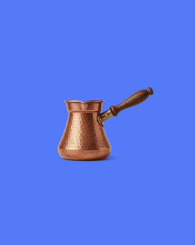

Посты об объектах
Карусели, короткие ролики и истории об армянских объектах.
CenterStage и карусели
Все 23 сюжета: карусели, промо и раскадровки →
Object Launch
Анимированные посты
Посты с медиа
13 сюжетов в трёх режимах просмотра. Медиа-фон, чередование и оригинал.